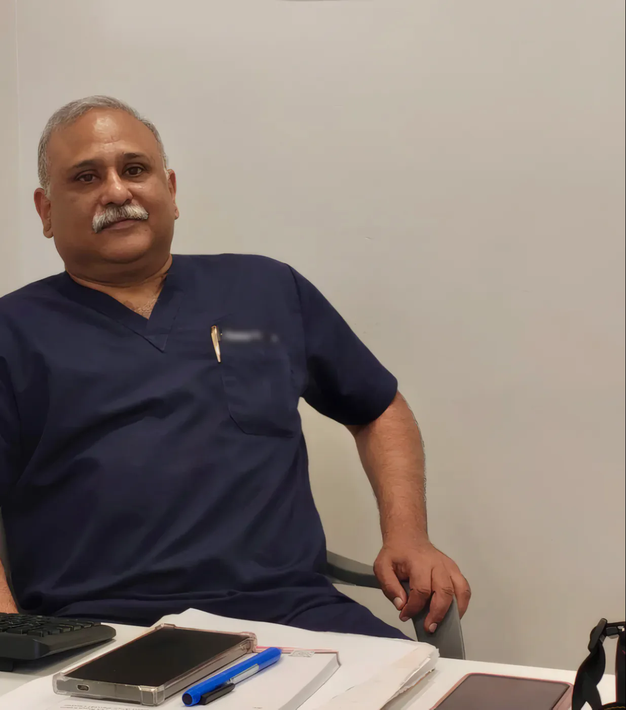

The building
B Clinic Building, a blue-glass tower on Hamad Al-Mubarak Street in Ras Salmiya.
Crowns, bridges, veneers and dentures from a specialist prosthodontist, plus the everyday dentistry your family needs. Dr. Thomas has treated patients in Kuwait since 2002.

Dr. Thomas Thomas, MDS, at his desk on the 10th floor
2002The year Dr. Thomas started private practice in Kuwait.
Dr. Thomas is a prosthodontist: his speciality is replacing and rebuilding teeth with crowns, bridges, veneers and dentures. He also does the general dentistry, root canals, extractions, fillings, children and gums, so most patients are treated start to finish under one roof.
He combines skill and patience to get results that look right and work properly. And we keep the bill sensible: dental work is much the same from clinic to clinic, so we always look for the most economical way to treat you.
A crown is a cap made over a tooth, especially one that has had root canal treatment, so it doesn't fracture. A bridge replaces missing teeth by fixing onto the teeth next to the gap.
When teeth are out of place or darker in colour, we design the smile and cover the teeth with thin veneers so they sit in harmony. Hollywood smile, laminates and Lumineers are different names for the same idea.
When decay reaches the nerve inside the tooth, a filling is no longer enough. We remove the infected part, clean and disinfect the canals, then fill and seal them.
When all the teeth are missing, a full denture is the economical answer. When some teeth are still there, a partial denture replaces the missing ones. Cast partial dentures in Cr-Co alloy are the stronger, longer-lasting option.
Teeth that are out of line are brought back into place with braces. Straight teeth are also easier to clean, wear more evenly and are less likely to chip.
Children are treated in a relaxed, stress-free room, using distraction techniques so they go through treatment with as little fear as possible. Parents stay involved.
Also: tooth-coloured fillings, gum treatment, extractions and wisdom teeth, crown lengthening, post and core, and teeth whitening.
Dental treatment is much the same in most clinics. Where we can make a difference is the cost, so we don't put financial stress on our patients and always look for the most economical solution that still does the job properly.
Ask us for the options and the price before we start. For dentures and some other treatments we help with certain insurance claims.
First visit? This is the way in, in the clinic's own photos.
B Clinic Building, a blue-glass tower on Hamad Al-Mubarak Street in Ras Salmiya.
The B Clinic sign stands at the entrance, in English and Arabic.
Take the lift to 10. Our glass door is right beside it.

Check in at reception and wait on the green sofas. Tell us if you're nervous; we'll go at your pace.
Dr. Thomas sees you himself, explains what he finds and what it will cost before anything starts.
I'm very much satisfied, would rate the overall quality of service received at Dr. Thomas Dental Clinic as excellent. Keep up the good work.
Hana Fathima, patient. Shared on the clinic's website.
Something else? Ask Dr. Thomas on WhatsApp or call 6997 5041.
With modern anaesthesia it is usually no more uncomfortable than having a filling done. Some tenderness afterwards is normal and settles with ordinary painkillers.
Typically 10 to 15 years with good oral hygiene and regular check-ups.
Veneers are a permanent treatment because a thin layer of enamel is removed. Ask about minimal-prep and no-prep veneers, which remove less or none.
No. Whitening works on natural teeth only, not on crowns, veneers or fillings.
By age 1, or within 6 months of the first tooth coming through.
10th Floor, B Clinic Building, Hamad Al-Mubarak Street, Ras Salmiya, Kuwait
Look for the blue B Clinic sign at the entrance, then take the lift to the 10th floor.
| Saturday | 1pm – 8pm |
| Sunday | 1pm – 8pm |
| Monday | 1pm – 8pm |
| Tuesday | 1pm – 8pm |
| Wednesday | 1pm – 8pm |
| Thursday | 1pm – 8pm |
| Friday | Closed |
Ramadan timings may vary. Call before you come.